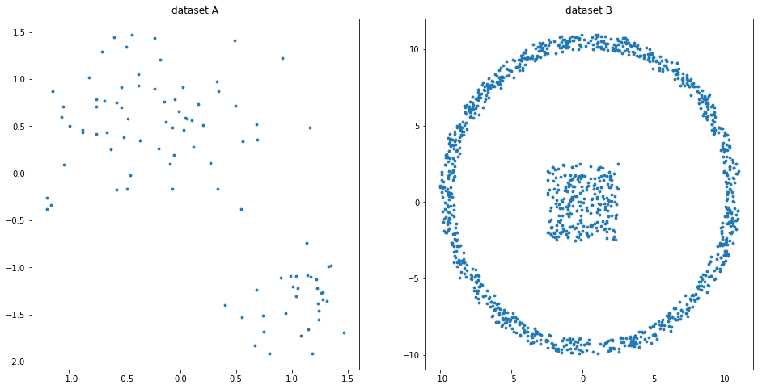
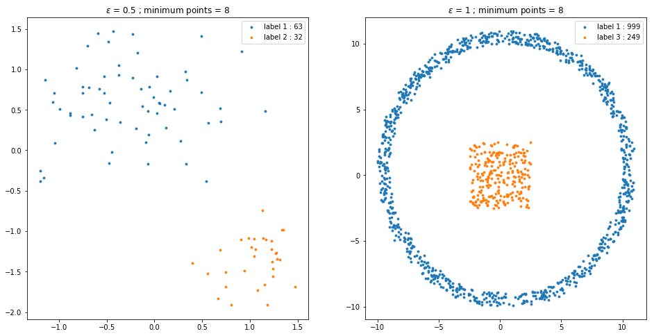

Overview and implementation of clustering algorithm using the DBSCAN technique.
%matplotlib inline
import matplotlib
import matplotlib.pyplot as plt
import numpy as np
from clustering__utils import *
x1, y1, x2, y2 = synthData()
X1 = np.array([x1, y1]).T
X2 = np.array([x2, y2]).T

class DBSCAN(Distance):
def __init__(self, epsilon=1, minPts=4):
super(DBSCAN, self).__init__()
self._epsilon = epsilon
self._minPts = minPts
def pred(self, X):
n = X.shape[0]
C = 0
label = np.zeros(n, int)
for i, p in enumerate(X):
if label[i]:
continue
d = self.distance(p, X)
conj = d <= self._epsilon
if np.sum(conj) - 1 < self._minPts:
label[i] = -1
continue
C += 1
argwhere = np.argwhere(conj)
argwhere = list(np.ravel(argwhere))
for q in argwhere:
if label[q] == -1:
label[q] = C
if label[q] != 0:
continue
label[q] = C
d = self.distance(X[q], np.delete(X, q, axis=0))
conj2 = d <= self._epsilon
if np.sum(conj2) >= self._minPts:
argwhere2 = np.ravel(np.argwhere(conj2))
argwhere += [a for a in argwhere2 if a not in argwhere]
return label
%%time
epsilon1 = 0.5; minPts1 = 8
dbscan1 = DBSCAN(epsilon1, minPts1)
E1 = dbscan1.pred(X1)
epsilon2 = 1; minPts2 = 8
dbscan2 = DBSCAN(epsilon2, minPts2)
E2 = dbscan2.pred(X2)
Wall time: 447 ms
